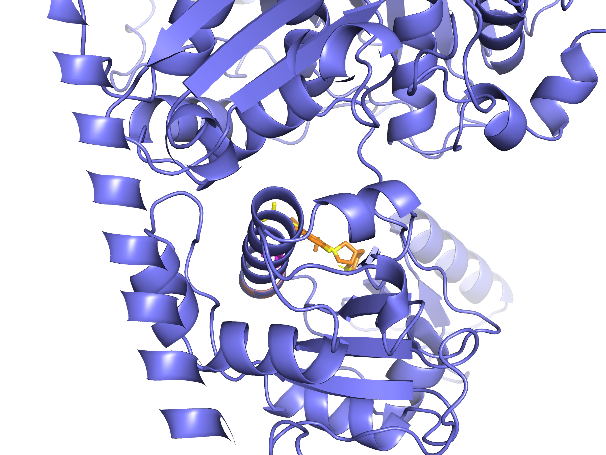

Overview
This pipeline learns where resistance mutations tend to arise, scores every accessible single-nucleotide change, and checks predictions against 12,287 clinical isolates and rigid-receptor docking where the mutation sits in the drug pocket.
04b sequence + homoplasy04c AlphaFold, ESM-204d XGBoost + drug proximity04e emergence scores08 CRyPTIC · 06/07 VinaData
All inputs are local files under data/ and analysis/results/.
Genomic and clinical
data/genomes/— 1,037 TB genomesdata/cryptic/MUTATIONS.csv.gz— 12,287 isolatesdata/metadata/cryptic_phenotypes.csvdata/reference/H37Rv.{gff,fasta}— 13 genes- WHO 2021 catalog — 32 hotspot residues
Structural
data/pdb/alphafold/— 13 modelsdata/pdb/crystal/— rpoB 5UHB, gyrA 5BS8data/pdb/*_receptor.pdbqtMFX_ligand.pdbqt,RFP_ligand.pdbqt
Model training
Four scripts in sequence; metrics from stratified cross-validation.
Stage 0 — scripts/04b_hotspot_model.py
Homoplasy and sequence features. AUROC 0.888.
Stage 1 — scripts/04c_stage1_features.py
SASA, ESM-2, contact density. AUROC 0.906.
Stage 2 — scripts/04d_docking_features.py
Drug proximity (10 Å, self-excluded), XGBoost, Platt calibration. AUROC 0.971, AUPRC 0.560. Top feature: homoplasy_alleles (0.269 gain).
Forecasting — scripts/04e_mutation_forecasting.py
Watchlists written to analysis/results/forecasting/.
scripts/12_audit.py (~180 checks)
CRyPTIC validation
scripts/08_cryptic_validation_full.py — matched-null enrichment p = 0.001.
Structural validation
06_filter_pocket_candidates.py keeps Tier-4 mutations within 4.5 Å of the co-crystal pocket.
07_tier4_pocket_vina_batch.py redocks WT under the same grid, then docks each mutant.
ΔΔG = ΔGmut − ΔGWT; pass if ≥ +0.15 kcal/mol.
gyrB Q538L
Codon 538 is a known fluoroquinolone site (N538D/K/S/T in clinical Mtb), but Q538L has no entry in CARD or PubMed. PyMOL confirms the mutant sidechain in the MFX pocket on AlphaFold gyrB.
An earlier run used WT baseline −6.16 and reported ΔΔG −0.17. The tier-4 batch redocks WT at −7.07; +0.74 is the score to cite.

| Gene | Mutation | Rank | Pocket (Å) | ΔG WT | ΔG mut | ΔΔG | Category | Pass |
|---|
From tier4_pocket_vina_scores.csv; REMARK lines in PDBQT files match within 0.02 kcal/mol.
Novelty audit
analysis/audit_novelty_and_scores.py — CARD, PubMed, PDBQT re-parse.
| Mutation | ΔΔG | Literature novel? | Notes |
|---|
Pipeline novel — Tier 4, zero carriers in CRyPTIC (all ten validated hits).
Literature novel — not listed in CARD or clinical Mtb literature.
Structurally validated — pocket filter plus Vina ΔΔG ≥ +0.15 kcal/mol.
Only gyrB Q538L satisfies all three as a de novo finding; the other nine serve as pipeline benchmarks.
Next steps
Manuscript and presentation
Lead with gyrB Q538L. Frame the nine other Vina hits as retrospective pipeline validation. Include CRyPTIC Tier 1 confirmations (e.g. gyrA D94A, rpoB H445L).
Phenotypic validation (in vivo MICs)
Test whether Q538L causes true physiological resistance. Transform a mutant gyrB plasmid into Mycobacterium smegmatis (BSL-1/2 surrogate), then run broth microdilution MIC assays against escalating moxifloxacin doses.
Extend to other pathogens — MRSA
Same architecture (homoplasy, structure, drug proximity, XGBoost, prospective validation) on Staphylococcus aureus resistance genes.
Mantis platform integration
Deploy emergence forecasting in the Mantis clinical genomics workflow — Tier-4 alerts with structural and literature novelty flags at WGS interpretation.